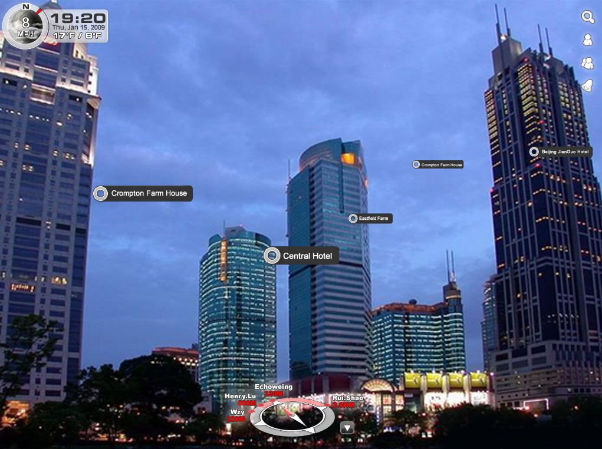
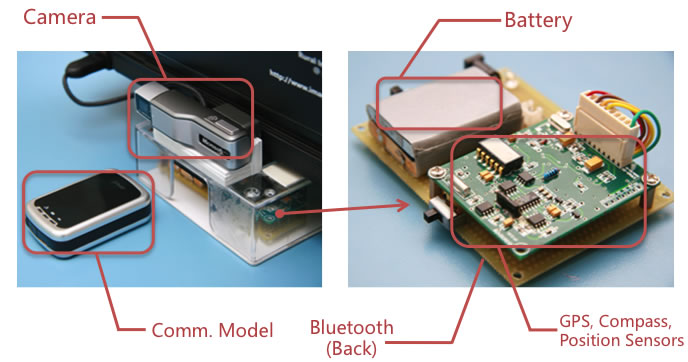

Type
Microsoft Imagine CupTime
April, 2009Team & Role
LU Chen, SHENG Yun, SHAO Rui, Thinrey.XU, Sater WANG ME (Tech Leader)Skills & Technologys
.NET Framework C# WPF XAML HTML / CSS Javascript Google Map API Google Earch API BluetoothTools
Blend (Front-end) Visual Studio (Dev) SQL Server (Data)Deliverables
Client in Tablet Client in Mobile Server side Web Spider and othersGlobal Guider
In 2012, Goggle announced their best wearable device - Goggle Glass, but in 2009, our team in Beijing University of Technology had shown our navigation prototype for Glass like devices, named Global Guider.
We have a dream, show us everything WHAT we looks, WHERE we should go. Background
Human become powerful in Internet, we knows everything before computer. In fact people cook up a word "Keyboard Man" to satire the man knows everything using keyboard but become idiot in the real world. We believe everyone has that experience: the Google Map shows that building over their, yes, but their are more than TEN building, which one is it? where should we go?
Solution
We designed and built Global Guider, it knows WHAT You Are Looking At, shows the name and other informations "ON" them directly. That is the most effective way, to navigate, to explore and to "surf" the city.
Theory
How can computer knows what we are looking at? This theory is a little like FPS game. Geographic system like Google Earth offers every building's longitude, latitude and altitude, that represent points in virtual world coordination. Using GPS we know our point, using compass we know which direction we are facing, using position sensors we build the view.
Using this theory, we can calculate the building's mapping position in screen, that is the magic we can mark the information "ON" the building.
Sounds like our daily life become a FPS game? YES! That's COOL!
Architecture
Hardware
In 2009, we had not found any device could simulate user scenario like Glass device, so Sater WANG build our own device contains camera, GPS, electronic compass and attitude sensors.
All combine this device could be bought from normal market, totally cost is less than $100 in 2009. Of course it will be cheaper, faster, more portable now.
My Contribution
The project continues five month with four member and two vendor. I act as technology leader, contributes:
- Product design, identify the problem, user scenario and product's definition;
- Architecture, select .NET platform and tablet devices, design the data flow and component interfaces;
- Front-end development, develop interface in tablet and website.
- Driver... haha~ ^_^
Award
Global Guider got Second Award in Microsoft Imagine Cup, 2008, Software Design topic.